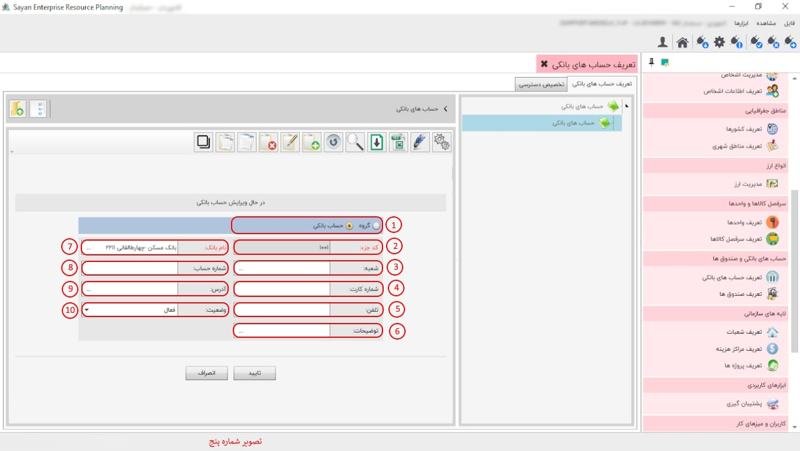

این گزینه به شما امکان ایجاد و گروه بندی حساب های بانکی را می دهد پیشنهاد می شود ابتدا حسابهای بانکی خود را گروه بندی کنید، سپس حسابهای مربوط به هر گروه را در درون آن تعریف نمایید، برای تعریف گروه یا ایجاد حساب بانکی از نوار ابزار گزینه ی اضافه یا F8 را بزنید، تصویر زیر نمایان می شود:

برای ادامه مطلب به عکس شماره دوم مراجعه نمایید.
-تعریف حساب های بانکی(کادر شماره یک):
-حساب های بانکی (کادر شماره دوم):
-حساب های بانکی (کادر شماره سوم):
-کادر شماره چهارم:
برای ادامه مطلب به عکس شماره سوم مراجعه نمایید.

-کادر شماره یک :
-کد جزء (کادر شماره دوم):
-وضعیت (کادر شماره سوم):
-نام گروه (کادر شماره چهارم):
-توضیحات (کادر شماره پنجم):
برای ادامه مطلب به عکس شماره چهارم مراجعه نمایید.

-حساب های بانکی (کادر شماره یک):
-کادر شماره دوم:
برای ادامه مطلب به عکس شماره پنجم مراجعه نمایید.
